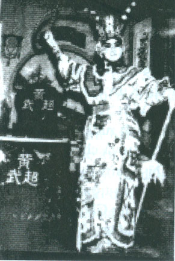

Trước khi kể chuyện “cô đào hát có phép thần thông”, tôi xin giới thiệu bối cảnh lịch sử của câu chuyện.
Nghệ sĩ cải lương theo đoàn hát đi lưu diễn khắp các miền đất nước, luôn luôn ghi nhớ câu tục ngữ: “Nhập gia tùy tục, Nhập giang tùy khúc”. Ghe chài của đoàn hát lúc di chuyển được tàu máy dầu kéo nhưng người tài công của ghe chài bao giờ cũng phải túc trực bên bánh lái ghe để có thể lái ghe chài theo luồng nước, tránh các đụn cát, các gò cát dưới lòng sông. Phải biết chỗ nông hay sâu, chỗ nào ghe chài của đoàn hát cập bến được. Về từng địa phương nơi đoàn hát đến, nghệ sĩ phải được ông quản lý của đoàn hát cho biết luật lệ của địa phương. Nơi nào cấm đến, cấm chụp ảnh, những điều cấm kỵ không được nói đến. Các anh Hề diễu thì phải tránh nói những gì mà các nhà chức trách ở địa phương có thể ngộ nhận là đoàn hát nói xiêng nói xỏ họ. Vì vậy, trong những năm 1946 đến năm 1954, thời kỳ chiến tranh Việt Pháp, các gánh hát có hai người chịu trách nhiệm quản lý: một chánh và một phó. Người chánh đi xin phép, mướn rạp, mướn phòng ngủ hay nhà nghỉ cho đào kép, mướn xe tải hay tàu kéo thì người phó lo công việc quản lý, giao thiệp với nhà chức trách địa phương, nơi đoàn hát đang trình diễn. Hoặc ngược lại, người phó quản lý đi lo bến mới, bãi diễn hay mướn rạp hát thì người quản lý chánh lo thủ trại. Và lần nào đi xin phép hát, mướn rạp, dán những tờ áp phích quảng cáo trước và dò hỏi tình hình của địa phương, ý thích của khán giả, người quản lý của đoàn hát đi trước có quyền chi tiêu rộng rãi và được ở lại tại địa phương mới đó vài ngày. Đoàn hát doanh thu thành hay bại, được an ninh hay không là nhờ ở tài ngoại giao của ông Quản lý.
Ngày nay, các bạn trẻ nghĩ là luật lệ trong một nước, một tỉnh thành hay quận ly thì đã được nhà cầm quyền ban bố bằng Hiến Pháp hoặc bằng các sắc luật; bất cứ địa phương nào trong một nước cũng đều phải áp dụng luật pháp đó giống như nhau, người Quản lý của gánh hát đâu có cần phải dọ biết những luật lệ, tập tục riêng của từng địa phương.
Sự thật thì không phải vậy! Từ năm 1946 đến năm 1954, thời kỳ chiến tranh Việt Pháp, mỗi địa phương có một lãnh chúa, mỗi ông lãnh chúa có quyền lực riêng mà chánh quyền trung ương cũng phải vị nễ, không can thiệp được dù cho quyền địa phương đó trái với những gì đã được quy định bằng sắc luật hoặc nghị định của chánh quyền trung ương.
Có những vùng của Việt Minh kiểm soát, có những vùng ” xôi đậu”, ban ngày của Quốc Gia, ban đêm của V.M. Có những vùng do quân đội Pháp chiếm đóng, và ngay trong các vùng nầy lại có các bót do lính của các Giáo Phái trấn giữ với sự cho phép của nhà cầm quyền Pháp.
Đoàn hát cải lương của chúng tôi khi lưu diễn ở các tỉnh miền Đông thì đã phải chịu điêu đứng khi đến Tây Ninh vì gặp các “ngài” chỉ huy của các bót Cao Đài ở các xã Cẩm Giang, Bến Xúc, Suối Đá… Chúng tôi về miền Tây hát, tuy được doanh thu cao vì dân miền Tây rất thích coi hát cải lương, nhưng đoàn hát cũng “trầy vi tróc vãi” với những bót do lính Hòa Hảo trú đóng. Những vùng Hòa Hảo lại do nhiều ông Tướng chỉ huy khác nhau nên cũng có nhiều luật lệ khác nhau.
Còn nhớ… những năm 1950 đến năm 1954… các đơn vị lính Hòa Hảo do ông Lâm Thành Nguyên thống lãnh, chiếm đóng từ Châu Đốc dài tới biên giới Cao Miên. Các đơn vị do ông Nguyễn Trung Trực chỉ huy thì đóng các bót ở các xã thuộc tỉnh Long Xuyên chạy dài tới chợ mới Long Xuyên. Xuống khỏi Long Xuyên một chút là Vàm Cống, chạy dài tới ngã ba Rạch Giá – Cần Thơ – Long Xuyên thì thuộc về phạm vi thế lực của các đơn vị Hòa Hảo dưới quyền chỉ huy của ông Lê Quang Liêm. Vùng Thốt Nốt – Ô Môn thuộc quyền ông Ba Cụt. Vùng Bình Thũy – Cái Vồn đi Cần Thơ thuộc quyền của ông thiếu tướng Năm Lửa. Lúc đó còn có những đơn vị lớn mang danh là bộ đội 40, 41, 42 Hòa Hảo… và ở vùng Cai Lậy – Chùa Phật Đá, Thủ Thừa có đơn vị quân lính của Hòa Hảo 12 phái…
Sau năm 1954, 1955, bộ đội Quốc Gia chỉ có tiểu đoàn 15 trú đóng tại Long Xuyên. Trước đó thì ngoài quân đội của Pháp (lính Lê Dương, Maroc, Senégalais, lính Việt Partisan, lính 11 Ric…) chánh quyền địa phương còn có các Ban Hội Tề, sau gọi là Hội đồng xã nắm quyền hành chánh ở các vùng nầy cũng phải là người thuộc Giáo Phái. Vì vậy các gánh hát cải lương sau khi xin phép hát ở tòa Hành Chánh cấp Tỉnh, cấp Quận, phải trình giấy tờ, sổ ghi tên tuổi các diễn viên và công nhân sân khấu cho sở Cảnh Sát rồi còn phải tới trình giấy tờ với các bót Hòa Hảo trú đóng trong vùng, sau đó mới tới trình với hành chánh xã.
Mỗi lần đi xin phép hát, trình sổ nhân sự của đoàn hát thì người Quản Lý đoàn hát luôn luôn phải biếu nhiều thiệp mời xem hát. Đoàn hát phải để dành ra ít nhứt là 4 hàng ghế thương hạng, 4 hàng ghế đầu, sát với mặt tiền sân khấu cho các vị quan quyền và gia đình xem hát.
Năam 1951, tôi đang đi gánh hát Tiếng Chuông của ông Bầu Cang. Anh Ba Tẹt, bầu gánh hát Ánh Sáng thương lượng với ông Bầu Cang, mượn tôi qua gánh Ánh Sáng giúp việc Quản Lý khi đoàn nầy hát các vùng Ô Môn, Bình Thủy, Cái Vồn ở Cần Thơ. Tôi gia nhập vô làng hia mão mới có ba năm, chưa có nhiều kinh nghiệm trong nghề hát và nghề quản lý gánh hát, nhưng tôi biết tiếng Tây và có học thức chút đỉnh nên việc giao thiệp với đồn bót, xin phép hát, kiểm duyệt tuồng tôi làm việc có phần dễ dàng hơn những anh em khác.

Gánh Ánh Sáng – Bầu Tập chuyên hát cương, hát tuồng Tàu, tuồng kiếm hiệp của soạn giả Mộng Vân, nhưng khi hát ở các bến Ô Môn, Bình Thủy, bắc Vàm Cống thì Anh Ba Tẹt và chị Nguyệt Yến bày thêm hát tuồng Phong Thần, Bàng Quyên – Tôn Tẩn, Trụ Vương – Đắc Kỷ, Hỏa thiêu Bá Lạc Đài. Chị Nguyệt Yến nói lớp tuồng, phân vai, hát và ca cương các đoạn tuồng chính yếu, tôi ghi chép và đưa cho anh em học hát. Buổi sáng đọc tuồng, ráp sơ sịa, tối hát. Vậy mà khán giả khen tuồng hay, nghệ sĩ đẹp và hát giỏi.
Khi sắp qua hát ở quận Cái Vồn, tôi biết bà Năm (vợ ông tướng Năm Lửa) sùng bái nhân vật Phàn Lê Huê nên tôi nói với anh Ba Tẹt và chị Nguyệt Yến chuẫn bị các tuồng theo truyện Tàu: Tiết Đinh San chinh tây, gồm có các lớp tuồng hay nhất như Thần Nữ dâng Ngũ Linh Kỳ, Tiết Đinh San cầu Phàn Lê Huê, Phàn Lê Huê phá Hồng Thủy Trận, Phàn Lê Huê phá Âm Dương trận. Tuồng diễn cương thì dễ dàng đối với các nghệ sĩ đoàn Ánh Sáng – Bầu Tập, có khó chăng là phải làm sao cho các nhân vật như Lê Sơn Thánh Mẩu, Phàn Lê Huê, Tần Hớn bay được trên sân khấu. Ngoài ra, việc các vì tiên phe Triệt Giáo và Phàn Lê Huê đấu phép, phá trận Hồng Thủy phải hấp dẫn như đấu phép thật, hô phong hoán vũ phải có mưa gió ào ào như bão tố, phải có sét giăng, sấm nổ, lửa cháy rần rần…
Đoàn Ánh Sáng – Bầu Tập chuyên hát tuồng kiếm hiệp, đấu boa nha (poignard) nhảy cửa sổ, ca vọng cổ, phựt đèn màu, nên phong cảnh vẻ các ngôi nhà đều có cửa sổ thật rộng, để khi kép hát phóng mình bay qua cửa sổ thì bên trong có bốn anh dàn cảnh, cầm bốn góc mền căng ra hứng để cho anh kép không té xuống sàn sân khấu, dập mũi, bể đầu. Những màn đấu súng thì dùng pháo châm điện cho nổ, nhưng khi hát có các màn đấu phép thì phải cho nổ trên sân khấu, khi liệng phép ra thì phép nổ, nháng lửa hoặc xẹt xẹt như sét đánh những khi có mưa giông. Phàn Lê Huê bay thì phải bay từ góc sân khấu nầy xẹt lên nóc sân khấu phía bên kia, bay một đường dài mới thật là hấp dẫn. Vì những kỹ thuật, xảo thuật mới đó đoàn hát không có nên ông bầu Ba Tẹt và chị Nguyệt Yến nhờ tôi đứng ra lo liệu các phương tiện xảo thuật cho tuồng hát vì chị Nguyệt Yến sẽ vào vai Phàn Lê Huê.
Tôi có người anh bà con làm đại úy an ninh phi trường Tân Sơn Nhứt nên tôi về Saigon nhờ anh mua dùm tôi giây cáp máy bay, thứ giây bằng thép, nhỏ như đầu đủa ăn nhưng có thể treo một vật nặng hằng mấy trăm ký lô. Với loại giây cáp bằng thép nầy thì khi người nghệ sĩ được kéo lên cho bay thì không sợ bị đứt giây té xuống, và nhất là vì nó làm bằng thép, giây nhỏ nên dù khán giả ngồi sát gần sân khấu, với đèn đuốc đủ màu xanh, đỏ, khi chớp khi tắt, khán giả không thể nào thấy sợi giây kéo nên cứ tưởng là người bay thật. Tôi lại đến các tiệm thuốc Bắc mua diêm trắng và hồng hoàng để về chế pháo đập. Diêm trắng thay cho chất Chlorate de potasse, cà nhuyễn, hồng hoàng cũng cà nhuyễn, trộn với bột than, ba thứ trộn đều, gói trong một lớp giấy với vài viên đá sỏi khi liệng xuống đất, ba chất thuốc cọ xát nhau, phát hỏa, nổ một tiếng thật lớn với ánh sáng xanh lè lóe mắt. Tuồng tích và mọi phương tiện xảo thuật được chuẩn bị đầy đủ thì đoàn hát được Ban Trị Sự Hòa Hảo ở Cái Vồn mua dàn, đưa đoàn về hát ở chợ quận.
Phàn Lê Huê và đoàn nữ binh trên đường phố
Tôi còn nhớ đoàn hát Ánh Sáng qua Cái Vồn hát vào những ngày đầu tháng 5 năm 1951. Lúc đó ở Cái Vồn đang có lễ lớn:
Lễ kỷ niệm ngày Đức Huỳnh Giáo Chủ tế thiên cáo địa thành lập Giáo hội Phật Giáo Hòa Hảo ngày 18 tháng S năm 1939.
Trên các ngã ba ngã tư các trục lộ chính trong quận đều có đặt bàn thờ với khung ảnh Đức Huỳnh Giáo Chủ. Trên con lộ đất dọc theo bờ sông, cứ cách một cây số, có dựng một cái chòi cao, trên đó có để bức ảnh lớn của Huỳnh Giáo Chủ, mặt hướng ra bờ sông.
Trong phố chợ, trước mỗi nhà, đều có một bàn ông Thiên, có thắp nhang khói ngui ngút. Ông Thiếu Tướng Năm Lửa ngồi trên khán đài, duyệt binh, phía sau lưng ông và ở hai bên tả, hữu, có mấy lớp lính đứng hộ vệ. Lính mặc quân phục đen, đội bê-rê đen, súng có lưỡi lê tuốt trần, khung cảnh coi rất là uy nghi oai dũng. Dân gọi nịnh ông là ông Tướng Soái.
Ba đại đội đi diễn hành trước khán đài, mang súng tiểu liên stell, súng mút và có cả mã tấu. Đoàn quân đi diễn binh tuy bước đi không đều nhưng thái độ rất nghiêm trang. Sau đoàn lính diễn binh là bàn thờ lớn với lư hương, đầy đủ nhang, đèn và khung hình Đức Giáo Chủ Huỳnh Phú Sổ. Theo sau bàn thờ là nữ tướng Phàn Lê Huê (do bà phu nhơn thiếu tướng đảm trách). Bà mặc y phục như trong tuồng hát, trước ngực có một bông hường bằng vải thật lớn, trên mão có hai lông trĩ cao, dài như các viên nữ tướng Đoàn Hồng Ngọc hay Phàn Lê Huê trong tuồng hát. Bà vừa đi diễn binh vừa múa song kiếm. Phía sau bà là một đoàn nữ binh, mặc quần lãnh đen, chân quấn xà cạp sọc đen trắng, mặc áo có in bông hoa thật lớn. Thắt lưng bằng khăn màu nâu sậm, cột hai dãi khăn bỏ thòng phía trái, đầu thì chít khăn võ sinh màu nâu, có gắn một bông hoa vàng phía trái. Các nữ binh cũng cầm song kiếm, bước đi rập ràng, oai dũng.
Khi bàn thờ Đức Huỳnh Giào Chủ được khiêng đi ngang khán đài, ông Tướng Soái đứng lên, đưa tay chào theo kiểu nhà binh Pháp. Lính cận vệ đứng sau lưng cũng bồng súng chào, tay xòe ra ngang ngực, lòng bàn tay úp xuống đất.
Các nghệ sĩ chúng tôi đêm đó sẽ hát tuồng Phàn Lê Huê phá Hồng Thủy trận, nhưng ngay buổi sáng đi coi lễ, đã được thấy bà thiếu tướng Phàn Lê Huê đi diễn binh, nên ai nấy đều lo sợ, không biết đêm hát tối nay, bà Phàn Lê Huê ngồi xem hát có bằng lòng cô Phàn Lê Huê trên sân khấu hay không?
Đào hát biết phép thần thông.
Bà Tướng Soái phu nhơn đi xem hát cải lương, ngồi ghế bành trên bục cao, kế bên có một cái bàn nhỏ để cái giỏ trầu. Sau lưng của bà có bốn cô nữ vệ binh mang kiếm theo hầu. Hai anh lính mang súng mút đứng gác gần cửa ra vô của rạp hát. Khán giả thì ngồi sau lưng của bà Tướng, đông tới mức là không có ai có thể đi tới hay đi lui gì được.
Ông bầu Ba Tẹt muốn lấy lòng Bà Tướng Soái nên tuồng Phàn Lê Huê phá Hồng Thủy trận diễn thành ba màn: Màn một hát lớp “Tiết Đinh San cầu Phàn Lê Huê”, Màn hai diễn cảnh “Phàn Lê Huê đăng đàn bái tướng”, Màn ba cảnh “phá trận Hồng Thủy” của nguyên soái Phàn Lê Huê.
Cô Nguyệt Yến, cô đào đẹp nhất, ca hay nhất và bộ múa võ cũng đẹp hạng nhất được chọn đóng vai Nguyên Soái Phàn Lê Huê. Cô Nguyệt Yến có một nước da trắng như bông bưởi, môi đỏ tự nhiên, má hồng, mắt sáng long lanh, tiếng nói nghe thanh tao dịu ngọt. Chỉ cần nói chuyện với cô một lúc là bọn mày râu sẽ mê mẫn tâm thần. Xem cô hát, xem cô múa võ, nghe cô ca thì bọn con trai dám bán nhà bán ruộng để tự nguyện xin theo cô mà hầu hạ.
Kép Thiện Tâm thủ vai Tiết Đinh San. Kép Thiện Tâm cao ráo, đẹp trai, ca vọng cổ rất mùi. Hề Vân Trình đóng vai Tần Hớn (kép bay) và Ba Tẹt vai Đậu Nhứt Hổ, tướng biết độn thổ. Các vai tiên Triệt Giáo thì do các kép Năm Chuồng (kép chuyên môn nhảy cửa sổ), Bảy Quí, Mười Trinh (kép chuyên đánh võ) thủ diễn.
Ngay trong màn đầu, nữ tướng Phàn Lê Huê vâng lời thầy là Lê Sơn Thánh Mẩu, hiến dâng thành Hàn Giang Quận để đầu Đường và kết hôn với Tiết Đinh San, nhưng Tiết Đinh San lầm cho là nữ tướng họ Phàn mê tài sắc của Đường Tướng mới phản chúa và trái ý cha nên sau đêm tân hôn, Tiết Đinh San đuổi Lê Huê đi.
Phàn Lê Huê vì tuân theo lời dạy của ân sư Lê Sơn Thánh Mẩu, đầu Đường trào là thuận theo ý trời nên tuy bị chồng ruồng rẫy, nàng vẫn cam chịu thiệt thòi. Trong lớp tuồng nầy cô Nguyệt Yến đã ca hai câu vọng cổ thật là hay:
(nối lối)
Chăn gối hững hờ chăn gối lẻ
Phấn hương lợt lạt phấn hương tàn, |
Bao nhiêu thương nhớ bao nhiêu lệ,
Mộng ước thôi rồi chịu vỡ tan.
(câu 5 vọng cổ):
Thất thểu lên yên bụi mờ theo vó ngựa, mưa lạnh hoàng hôn ướt đẫm nhung bào, ta chẳng biết giọt mưa rơi hay hay lệ thắm tuôn trào… ôi, “tùng cúc lưỡng khai tha nhật lệ, cô chu nhất hệ cố viên tâm”, Gió ngàn ơi hãy dứt tiếng bi than, ta trở lại Hàn Giang với cõi lòng đà tan nát, thân hoa trôi bèo dạt lệ Hàn Giang đượm chảy bao lần.
(câu 6 vọng cổ):
Hàn Giang ôi, ta bỡ ngỡ quay về thăm cảnh cũ sao hoa lá vẫn tiêu điều rũ rượi như chế nhạo kẻ bị chồng phụ bạc đuổi xô, Tim ta đau như cơn gió đầu thu, lệ ta nhỏ như giọt mưa rơi kẻ lá. Hàn Giang ôi, hãy khóc lên đi một cuộc tình tan vỡ cho tim ta nhẹ mối ưu phiền, ta sống giữa Hàn Giang với chuỗi ngày khổ đau câm lặng, để nghiền ngẫm hai chữ ân tình đã khiến cho mình cam chịu cảnh cô đơn.
Dưới khán phòng có nhiều khán giả khóc rấm rức, tôi đứng bên cánh gà nhìn xuống, thấy bà Tướng cũng lấy khăn lau nước mắt, một cô nữ binh têm sẫn trầu dâng cho bả, bà lấy trầu nhai lia như muốn nhai xương tên Tiết Đinh San cho hả dạ. Bà xĩa thuốc thật mạnh như cố nén cái giận trong lòng.
Đến lớp tuồng Tiết Nhơn Quí bị vây khổn trong trận Hồng Thủy, quân sư Từ Mậu Công phái Tiết Đinh San về Hàn Gia Quận, cầu Phàn Lê Huê phát binh đi cứu cha chồng và Hồng Thủy trận, Phàn Lê Huê không nhận lời khiến cho Đinh San phải chịu nhục, tam bộ nhất bái, đi ba bước phải lạy một lạy, lạy dài từ dinh Đường cho tới quận Hàn Giang.
Khi Tiết Đinh San lạy một lạy, ca một câu, bước ba bước, lạy thêm một lạy, khán giả khoái quá, vỗ tay la: “Cho cái thằng chồng ngu lạy cho u đầu sứt trán nó đi, đừng thèm phá trận, đừng thèm cứu cha của cái thằng ngu đó”.
Tôi nghe tiếng tu hít thổi rét… rét và anh lính la:” Mấy người im lặng cho Bà coi hát”.
Bà Tướng cười hề hề:
– Kệ nó. Cho tụi nó chưởi cái thằng chồng ngu.
Phàn Lê Huê chỉ nhận lời phá trận khi được trao binh quyền và làm lễ đăng đàn bái tướng. Màn bỏ xuống trong sự vỗ tay hoan hô nhiệt liệt của khán giả.
Màn Hai lớp ” Phàn Lê Huê đăng đàn bái tướng”, là một hoạt cảnh múa kiếm thật đẹp của Phàn Lê Huê, Tiết Đinh San quỳ dâng ấn tín Nguyên soái và Thượng phương bảo kiếm của vua Đường. Phàn Lê Huê bái nhận ấn tín, truyền lịnh cho Tiết Đinh San làm Nhất lộ tiên phuông, Tần Hớn và Đậu Nhứt Hổ: Tả, Hữu Nhị vị tướng quân. Sau đó Nguyên soái Phàn Lê Huê đứng lên, vung cây gươm Thượng phương bảo kiếm hét lớn “Truyền tấn binh”. Trống và phèng la đổ liên hồi, tiếng trống như sấm động, dục tiến quân. Quân sĩ trong đoàn hát múa cờ, múa kiếm chạy ngang qua sân khấu.
Khi Phàn Lê Huê trên sân khấu hô tiến binh, chúng tôi bỗng thấy hàng loạt phụ nữ khán giả phía dưới khán phòng đứng thẳng người, đồng loạt vung tay chỉ về phía trước, hét lớn:” Tiến”… ” Tiến”. Tiếng thét tiến quân đầy khí thế của khán giả làm cho chúng tôi rùng mình, rởn óc!
Anh Ba Tẹt bầu gánh hát chạy kiếm tôi, tôi cũng đang định tìm anh để bàn chuyện hát màn “phá trận”. Trước khí thế hăng say của khán giả, nữ binh của Bà Tướng Soái Năm Lửa, chúng tôi cùng có một ý nghĩ là cái màn “phá trận” phải hát cho thật là “Xôm”, nghĩa là màn đấu phép thì phải cho pháo điện và pháo đập nổ liên hồi, có sét đánh, có chớp giăng như trời long đất lở. Bao nhiêu pháo đập làm sẵn dành cho ba xuất hát được đem ra, phát cho các diễn viên đứng hai bên cánh gà, để nhờ liệng vô “trận” từng chập. Pháo châm ngòi điện cũng được anh thợ đèn gắn thêm sau các bục đá giả trên sân khấu.
Màn ba là Trận Hồng Thủy, ánh sáng một bên đỏ, một bên xanh. Bên đỏ có một dàn quạt máy ba cái, đóng trong thùng cây, bên ngoài vẻ hình một tảng đá, trước quạt máy có dán rất nhiều giấy kiếng màu đỏ, cắt theo chiều dài. Khi không bật điện thì giấy đỏ nằm rạp xuống sàn sân khấu, khán giả không thấy. Khi bật điện, quạt máy chạy càng lúc càng mạnh, giấy kiếng đỏ thổi bay cuồn cuộn tới trước, cộng với ánh sáng sân khấu phía đó đỏ rực lên sẽ tạo ra ảo giác cho khán giả thấy là lửa đang cháy phừng phực. Phía đèn xanh cũng một dàn quạt máy như vậy, có khác là bên thủy trận thì giấy kiếng xanh và đèn xanh. Khi có bật điện lên thì giấy kiếng được thổi ra, bay ào ào như hình ảnh của những ngọn sóng vỗ nước cuốn.
Màn ba, màn nhung vừa kéo lên, chúng tôi đã nghe tiếng vỗ tay thật lớn, thật lâu của khán giả, báo hiệu là họ đang nóng lòng chờ coi Phàn Lê Huê phá trận. Tôi nhìn xuống khán phòng thì thấy bà Tướng Soái Năm Lửa đã hết nhai trầu, bà ngồi thẳng thớm trên ghế bành như hình vẽ của các nữ tướng Trưng, Triệu trên lưng voi, tay bà cầm cây quạt giấy như nắm thanh kiếm…
Tiết Nhơn Quí bị vây trong trận hồng thủy, mỗi khi ông múa phương thiên họa kích xông ra thì lửa cháy, nước cuốn, tên bắn như mưa. Tiết Nhơn Quí bị thương, ca bài xàng xê lớp xề, tự thán e rằng sẽ bỏ mạng sa tràng tại vùng đất Phiên nầy. Bỗng ông nghe tiếng quân reo tở mở, Tiết Đinh San tiên phuông xông vô trận. Cả hai cha con họ Tiết đánh với hai vị địa tiên Triệt Giáo, bị phép tiên đánh té ngồi dưới đất, hai vị tiên biến mất. Trong ánh sáng khi chớp lòa khi mờ sáng, tạo ra ảo giác mơ hồ, Tiết Đinh San ca vọng cổ, báo cho cha biết là hắn đã cầu được Phàn Lê Huê đăng đàn bái tướng, Phàn Lê Huê sẽ phá trận. Đinh San đi tiên phuông, tưởng là sẽ phá được trận cứu cha nhưng không ngờ trận Hồng Thủy quá ác, Đinh San cũng bị vây trong trận như cha.
Lại nghe tiếng reo hò tở mỡ, nguyên soái Phàn Lê Huê múa song kiếm, đánh lui hai vì tiên Triệt Giáo, xông vô trận. Bọn Triệt Giáo hóa phép, lửa cháy đỏ trời, nước dâng sóng vỗ, bọn quỷ đầu trâu mặt ngựa xông vào đâm chém. Phàn Lê Huê đứng trên tảng đá giữa trận, rút cây cờ Ngũ Linh mang trên lưng ra, vũ lộng thần oai, hô biến, hô giáng. Khi Phàn Lê Huê vung cao Ngũ Linh Kỳ, múa quanh mình thì anh thợ đèn bật contact cho các vĩ pháo điện nổ khi bên đông, khi bên tây, khi sau lưng bọn Triệt Giáo khiến cho chúng nó phải nhảy nai. Lá cờ Ngũ Linh được một ngọn đèn than 1000 watts chiếu, đèn có kiếng màu vàng bên ngoài nên ánh sáng màu vàng chói ngời như ánh hào quang. Ngọn lửa đỏ bên Hỏa trận khi bùng sáng khi chợp tắt, ngọn thủy triều xanh bên Thủy Trận cũng chập chờn như cả hai màu đỏ xanh của Hồng Thủy Trận bị ánh đạo vàng trên Ngũ Linh Kỳ đánh bại.
Bên trong các nghệ sĩ đứng bên cánh gà theo hướng cờ phất, theo giọng biến… biến… của nguyên soái Phàn Lê Huê mà quăng các viên pháo đập xuống sàn sân khấu. Pháo nổ chát chúa kèm theo ánh lửa xanh lè chớp sáng, bọn đầu trâu mặt ngựa xông vô, bị tiếng nổ và lửa phép của Lê Huê, té nhào trở ra, song chúng nó lại nhào vô hò hét. Tiếng trống tiếng nhạc, tiếng nổ chát chúa và ánh điện xẹt xẹt như sấm động sét giăng, tiếng quân la tiến...tiến, tiếng hô giáng giáng của Phàn Lê Huê làm cho trận đánh càng thêm gay cấn, hào hùng.
Về phía khán giả, tôi nhìn xuống thấy Bà Tướng cầm cây quạt giấy khi chỉ bên đông, khi múa bên tây, miệng lẩm bẩm như đọc thần chú. Bà cũng mê say như đang phá trận Hồng Thủy. Bỗng một thanh niên tóc xỏa ngang vai, mặc y phục màu nâu sậm, chạy ra ngoài lấy cây cờ màu già có hình bánh xe tạo hóa và một bông sen ngay chính giữa lá cờ. Anh mang cờ lên sân khấu, qùy một chân dưới bục đá có Phàn Lê Huê đứng phía trên, anh phất phất ngọn cờ Hòa Hảo. Bốn nữ vệ binh của Bà Tướng cũng nhảy lên sân khấu, múa kiếm quanh mình, các cô đứng bảo vệ lá cờ Hòa Hảo. Phàn Lê Huê vẫn múa lá cờ Ngũ Linh Kỳ. Tôi và anh ba Tẹt sợ mấy cây kiếm thiệt của mấy cô nữ vệ binh gây thương tích cho các anh em trong đoàn hát nên hô các anh đứng trong cánh gà liệng hết pháo nổ vô sân khấu, đồng thời hét lớn, nhắc tuồng:
” Tụi bấy chết hết đi.”
Bọn đầu trâu mặt ngựa và hai vị tiên Triệt Giáo ngã ngang ra chết, lui vô hậu trường. Pháo đập nổ liên hồi, khói pháo mịt mù, khét lẹt. Các cô nữ binh và anh cầm cờ Hòa hảo bị cháy xém vài chỗ trên áo quần. Phàn Lê Huê bay cái rẹt lên phía trên nóc sân khấu. Màn bỏ xuống trong tiếng vỗ tay cuồng nhiệt của khán giả.
Chúng tôi vén màn, hộ tống bốn cô và anh chàng dũng sĩ áo lam, cầm cờ Hòa Hảo xuống phía trước sân khấu, gặp Bà Tướng. Bà hài lòng, khen:
“Mấy con giỏi lắm Bà sẽ thưởng cho mấy con”.
Bốn cô và một cậu vừa xông trận, chấp tay cúi đầu cảm tạ.
Bà thấy tôi đứng đó, Bà phán một câu:
– Chú biện tuồng vô kêu cô đào có phép thần thông ra bà bảo.
Tôi dạ một tiếng, chạy bay vô hậu trường.
Cô đào Nguyệt Yến đã được tháo giây bay, đứng giữa sân khấu, thở vì mệt và vì ngộp khói thuốc pháo, chưa thay y phục hát, tôi tới bảo:
– Bà Tướng kêu chị ra gặp bả kìa.
Chị Nguyệt Yến, anh Ba Tẹt còn mặc y phục hát, theo tôi ra khán phòng. Bà Tướng nựng mặt, vuốt bàn tay của Phàn Lê Huê – Nguyệt Yến, bà nói:
– Cô biết phép thần thông, biết múa kiếm, giỏi lắm. Cô ở lại đây dạy cho đám nữ binh của Bà đi. Đừng đi theo ghe hát nữa, cực lắm. Vậy hén? Ngày mai cô vô dinh của Bà ở, Bà lo hết cho cô. Ngày mai nghen.
Bà nói xong rồi, không cần nghe trả lời là cô đào hát có ưng chịu hay không, bà ra cửa, leo lên xe jeep. Xe chạy, Bà còn khoát khoát tay chào Phàn Lê Huê trong rạp hát.
Đêm hát thành công quá sức tưởng tượng. Doanh thu mấy ngày qua cũng rất cao và Bà Tướng còn tặng thêm một số tiền cho cô đào đóng vai Phàn Lê Huê, lẽ ra thì chúng tôi vui mừng, nhưng sau đêm vãn hát đó, chúng tôi không tài nào ngủ được. Bà Tướng muốn Phàn Lê Huê Nguyệt Yến ở lại dạy phép thuật và song kiếm cho đám nữ binh của Bà. Bà cũng muốn học bay như Phàn Lê Huê đã bay trên sân khấu. Chuyện hát giả trên sân khấu mà Bà Tướng tưởng “Cô đào có phép thần thông thiệt”.
Ngay vừa hừng sáng, chúng tôi cùng nhau trốn về Cần Thơ rồi đón xe về Saigon ngay. Đồ đạc và ghe hát để cho anh em dàn cảnh đưa về sau. Bà Tướng thấy chúng tôi không đến trình diện, chắc Bà cũng hiểu ra là lệnh của Bà cũng khó mà thực hiện nên Bà không truy cứu. Riêng đoàn hát Ánh Sáng thì mấy năm sau không dám về miệt Hậu Giang để hát nữa.
Một chuyện nhớ đời của giới nghệ sĩ cải lương trong mấy mùa chinh chiến.